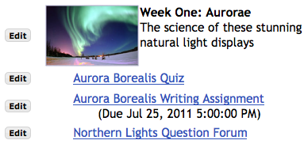
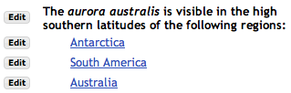
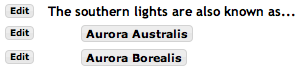

Bắt đầu với bài học
Thêm nội dung của bạn vào trang này bằng cách sử dụng "Thêm Nội Dung" trình đơn thả xuống. Các tùy chọn phổ biến nhất là
- Thêm văn bản - gõ văn bản vào một trình soạn thảo văn bản tốt
- Thêm liên kết nội dung - tải lên một tài liệu hoặc thêm một URL cho một trang web. Điều này là kết quả trong một liên kết.
- Nội dung nhúng trên trang - Thêm một mục hiển thị trên trang, ví dụ. một bài thuyết trình flash hoặc video.
Thên liên kết nội dung and Nội dung nhúng trên trang cả hai có thể được sử dụng để tải lên một tập tin hoặc liên kết đến một trang web bên ngoài.
Sự khác biệt là Thêm Liên Kết Nội Dung sẽ dẫn đến một liên kết đến mục, trong khi Nhúng Nội dung trên trang sẽ đặt mục
chính nó trên trang. Trong trường hợp video, nội dung nhúng sẽ sử dụng một trình video thích hợp.
Một khi bạn đã thêm vào nội dung, bạn sẽ tìm thấynút Chỉnh Sửa bên cạnh mỗi mục nơi bạn có thể điều chỉnh kích thước của các đối tượng đa phương tiện, thay đổi tiêu đề, thêm văn bản mô tả, vv Bạn cũng có thể sử dụng Chỉnh sửa để phát hành các hoạt động và thông tin liên tục.
Những thứ khác bạn có thể bỏ vào trang
- Thêm bài tập - Chọn một bài tập từ công cụ bài tập của Sakai, và thêm nó vào trang.
- Thêm bài trắc nghiệm - Chọn một bài tập từ công cụ bài kiểm tra và trắc nghiệm của Sakai, và thêm nó vào trang.
- Thêm chủ đề diễn đàn - Chọn một chủ đề từ một công cụ diễn đàn của Sakai, và thêm nó vào trang.
- Thêm câu hỏi - Đặt một trắc nghiệm hoặc câu hỏi trả lời ngắn gọn trên trang.Nhiều câu hỏi trắc nghiệm có thể được sử dụng như các cuộc thăm dò.
- Thêm công cụ bình luận - Cho phép sinh viên vào bình luận.
- Thêm nội dung học sinh - Cho phép sinh viên tạo một trang với nội dung của chính họ. Những sinh viên khác có thể bình luận nó.
- Thêm trang con - Create another page to contain content, Thêm liên kết nó tới trang này.
- Thêm trang web - Tải lên một file ZIP. Supports Camtasia, Wimba Create, and Articulate, but any ZIP file containing resources may be uploaded.
- Thêm công cụ ngoài - Thông thường bạn được cho biết nếu bạn cần phải sử dụng công cụ này
Nút"Cài đặt" ở đầu trang điều khiển các tính năng bổ sung mà áp dụng cho toàn bộ trang. Các nút"Chỉnh Sửa" bên cạnh mỗi
tính năng điều khiển mục áp dụng cho các mục đó.
Thông tin thêm
- Nhiều nội dung Trong những hướng dẫn cụ thể và mẹo kỹ thuật liên quan đến các trình duyệt khác nhau
- Khả năng tiếp cận Web Tạo nội dung truy cập để sử dụng bài học
- Sắp xếp thứ tự Yêu cầu hoàn thành một hoặc nhiều yêu cầu trước khi những cái khác được phát hành tới sinh viên người tham gia trang dự án.
Sử dụng phổ biến
Có một số cách để sử dụng trang Bài Học. Đây là hai cách phổ biến nhất:
Sử dụng chi tiết
Trong nhiều trường hợp hai phương pháp trên là tất cả các bạn cần. Tuy nhiên nó cũng có thể sử dụng bài học để xây dựng các cấu trúc phức tạp hơn của các trang. Dưới đây là một vài phương pháp để làm điều đó:
- Xây dựng một chuỗi các trang Đôi khi bạn muốn sinh viên phải đi qua một trình tự cụ thể của trang. Thông thường, chúng tôi khuyên bạn nên tạo các trang như các trang web từ một trang đơn chính, như trong ví dụ 2. Điều đó làm cho nó dễ dàng cho học sinh xem lại tất cả các tài liệu. Nhưng nếu bạn muốn đẩy học sinh đi qua trong một trình tự cụ thể, bạn có thể thêm một liên kết đến các trang tiếp theo , thông thường là ở dưới cùng của trang. Nếu bạn làm điều này một vài lần, bạn sẽ xây dựng một chuỗi các trang.
Đểm thêm một Trang tiếp theo, sử dụng Thêm trang con, nhưng chọn tùy chọn "trang kế". Thông thường bạn cũng sẽ muốn chọn "hiển thị như nút".
Kiểm tra "Trang tiếp" cung cấp cho một trang đó thường sẽ không quay trở lại hiện tại. (Tất nhiên các sinh viên luôn có thể tới bất kỳ trang nào bằng cách sử dụng chỉ mục trang, trừ khi bạn đã hạn chế quyền truy cập vào trang.)
Kiểm tra "hiển thị như một nút" gives you a button rather than a link.
- Đi đến trang khác nhau tùy thuộc vào một sự lựa chọn của sinh viên Xem ví dụ 3 bên lề phải. Đôi khi bạn có thể muốn hỏi một câu hỏi và có sinh viên đi đến một trang khác nhau tùy thuộc vào cách họ trả lời các câu hỏi. Để làm điều đó, hỏi câu trả lời dùng Thêm văn bản, và sau đó đặt trang kế các mục dưới nó, tới các trang khác. Để làm điều đó, sử dụng Thêm trang con lần hai.
Cài đặt bạn sử dụng cho Thêm trang con là tùy thuộc vào bạn. Trong ví dụ 3 chúng tôi đã sử dụng "show as button" and "next page."
|

Ví dụ 1. Trang đơn với THêm văn bản, Và bài trắc nghiệm, Thêm Bài tập và Thêm diễn đàn. Các hình ảnh được chèn vào trong trình biên tập web Thêm văn bản.

Ví dụ 2. Mẫu của một đơn vị có nhiều phần: một Thêm văn bảnnhỏ và ba trang con, một cho mỗi phiên. Chọn mỗi trang con để thêm nội dung tới nó.

Ví dụ 3. Đi đến một trang khác nhau tùy thuộc vào câu trả lời. Hai câu trả lời được thêm Thêm trang con. Tuy nhiên, 2 tùy chọn đã được thêm: "Trang kế" và "Hiển thị như một nút". Lưu ý rằng Thêm trang con cho phép bạn tạo ra một trang mới hoặc tham khảo một trang hiện tại.
|